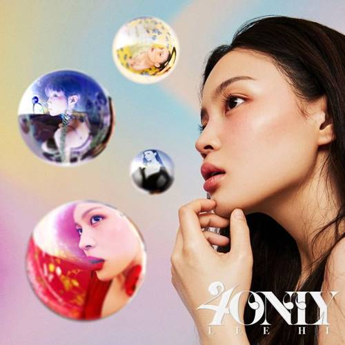

Top 1

Life Goes On
This song belongs to my top 1 list since it was sang by a Kpop group named, BTS. This is a comforting song about motivating people to do more things in life even if we hit rock bottom. In order to live life, we need to be stronger mentally and physically and be around with the people you love and who loves you for who you are.
Top 2

My Heart It Beats For You
This is my current on-repeat song on my Spotify playlist because of the nice flow and beat of the music. This song is about no matter how far you are or where you are from you loved one, you still strongly have feelings for them. Technically, it is a song for your one and only person and expressing how much you miss them dearly.
Top 3

Polaroid Love
This is a song by a Kpop group named, Enhypen. This is a cute and catchy song about realizing and confessing their love to someone.
Top 4
Helplessly
I found this song by Tatiana Manaois very calming. This song is dedicated to the people who are in love and supports each other no matter what. Through thick and thin, they will somehow manage to go up again and be happy.
Top 5
Easy
The song "Easy" was sang by Mac Ayres. The vibe of the song is very calming and soothing which makes the listener feel at ease and heart flutter because of the lyrics.
Top 6

Just A Little Bit
This is probably one of my favorite songs as well since it was sang by Enhypen. This is their first full studio album ever since their debut. They released this song with a cool and catchy tone of music.
Top 7
Only
This song is about marrying someone you love, grow old with them, and be there when you are at your lowest point in life. They are there to guide and take care of them no matter what the future holds.
Top 8

On
The song "On" by BTS is very catchy which make you want to learn their whole dance choreography and just feel good.
Top 9

Mikrokosmos
This song is about embracing who we are and realize that we are unique and special in our own different ways.
Top 10

The Truth Untold
The lyrics behind this song is quite deep and heartbreaking. It is about about an 'ugly' man who has locked himself into an ancient castle to hide himself from the world because he had received a lot of cruelty while growing up. Therefore, he tried to hide from people.